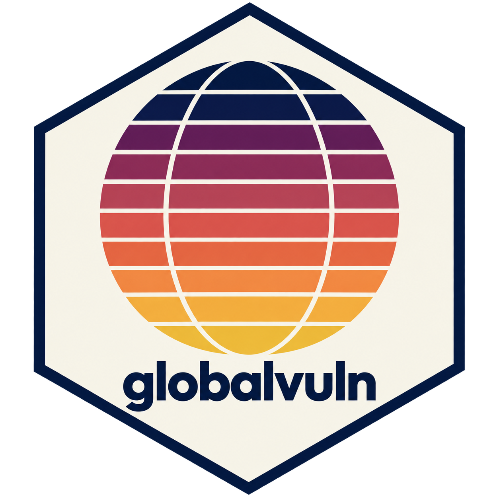

Individual humanitarian index datasets
individual_indices.RdSixteen consistently structured datasets, one for each published index in
the collection. Each uses the same 195-country master geography so datasets
can be compared or collated by iso3; rows outside an index's published
coverage contain missing source and score fields.
Format
Each object is a data frame with 195 rows and 19 variables:
- country
Country name from the master geography.
- iso3
Three-letter ISO 3166-1 country code.
- region
United Nations M49 region.
- subregion
United Nations M49 subregion.
- index_id
Stable short identifier for the index.
- index_name
Human-readable name of the index.
- source_country
Country label in the publisher's source; missing when the country was not present in that source.
- score
Publisher score on its original scale.
- score_label
Publisher display label when meaningful, including censored values, score ranges, percentages, or classifications.
- reference_year
Year or period represented by the observation.
- edition
Publisher's edition or release label.
- score_direction
Whether a higher or lower publisher score denotes greater vulnerability:
higher_worseorlower_worse.- rankable
Whether the index is eligible for ranking.
- eligible_for_counts
Whether an available rank contributes to country-level summary counts and proportions.
- n_scored
Number of countries with an exact numeric score for the index.
- rank
Rank among scored countries, with 1 denoting most vulnerable; ties receive the minimum rank.
- decile
Vulnerability decile derived from rank, from 1 (most vulnerable) to 10 (least vulnerable).
- top_10
Whether the country has vulnerability rank 10 or better.
- top_20
Whether the country has vulnerability rank 20 or better.
Source
Publisher details and URLs are in humanitarian_index_sources. Data snapshot: 4 August 2026.
Details
Publisher scores retain their original scales. Rankings are calculated
separately within each index's exact numeric coverage; missing and censored
scores are not ranked. Deciles are
min(10, floor(10 * (rank - 1) / n_scored) + 1). Ties use minimum rank, so
more than 10 or 20 countries can have top_10 or top_20 set to TRUE.
The included datasets are:
inform_risk: INFORM Risk, 2026 v0.7.2. Measures humanitarian crisis and disaster risk; higher scores indicate greater vulnerability.inform_severity: INFORM Severity, June 2026. Measures current crisis severity; higher scores indicate greater vulnerability. Coverage is the publisher's country sheet.underfunded_crisis: Underfunded Crisis Index, 2025. Reports the cumulative share of requirements funded for 2021–2025; lower percentages indicate greater vulnerability. Regional plans are excluded.oecd_fragility: OECD Multidimensional Fragility, States of Fragility 2025. Measures exposure to risk and insufficient resilience; lower scores indicate greater vulnerability. The public artifact covers 61 high- or extreme-fragility contexts.worldrisk: WorldRiskIndex, 2025. Measures disaster risk from exposure and societal vulnerability; higher scores indicate greater vulnerability.nd_gain: ND-GAIN Country Index, 2026 release using 2024 scores. Measures climate vulnerability and adaptation readiness; lower overall scores indicate greater vulnerability.hdi: Human Development Index, Human Development Report 2025 using 2023 scores. Measures health, education, and living standards; lower scores indicate greater vulnerability.mpi: Global Multidimensional Poverty Index, 2025. Measures overlapping household deprivations; higher scores indicate greater vulnerability. Reference years vary by country survey.ghi: Global Hunger Index, 2025. Measures hunger from undernourishment and child-health indicators; higher scores indicate greater vulnerability. Only exact values are ranked; censored values and ranges remain labels.ghs: Global Health Security Index, 2021. Measures epidemic and pandemic preparedness; lower scores indicate greater vulnerability.wps: Women, Peace and Security Index, 2025/26. Measures women's inclusion, justice, and security; lower scores indicate greater vulnerability.un_mvi: United Nations Multidimensional Vulnerability Index, High-Level Panel results using 2023 data. Measures structural vulnerability and lack of resilience; higher scores indicate greater vulnerability.debt_distress: IMF debt-distress classification, 31 March 2026. The published class is paired with a derived ordinal code from 1 (low) to 4 (in debt distress); it is intentionally not ranked or placed in deciles.searo: Sexual Exploitation and Abuse Risk Overview, 2026 v1.2 using December 2025 data. Measures contextual safeguarding risk; higher scores indicate greater vulnerability.disaster_displacement: IDMC Disaster Displacement Risk Model, GDRM 2.0. Intended to report current-climate annual average displacement, with higher values indicating greater vulnerability. Values are missing in this snapshot because no stable country table was available.internal_displacement: IDMC Internal Displacement Index, 2022 values published in 2023. Measures policy, capacity, drivers, and impacts; lower scores indicate greater vulnerability. Numeric coverage is 44 countries.
Examples
data(inform_risk)
head(inform_risk[!is.na(inform_risk$score),
c("country", "score", "rank", "decile", "top_10")])
#> country score rank decile top_10
#> 1 Afghanistan 7.8 6 1 TRUE
#> 2 Albania 3.1 118 7 FALSE
#> 3 Algeria 4.3 75 4 FALSE
#> 5 Angola 6.0 27 2 FALSE
#> 6 Antigua and Barbuda 2.1 165 9 FALSE
#> 7 Argentina 3.7 94 5 FALSE